Processadors de text
El mòdul Writer del LibreOffice incorpora les eines bàsiques d’un processador de textos, juntament als recursos més avançats. Porta annexat un editor HTML.
En funció de les necessitats de cadascú en l’ús d’un processador de textos, utilitzareu amb més freqüència unes eines o unes altres.
Sobre el processador de textos del LibreOffice, es mostrarà quines funcionalitats hi trobareu i es presentarà una introducció de les seves possibilitats, sense aprofundir en el funcionament de cadascuna de les utilitats. Per una altra banda, moltes de les eines que utilitzeu habitualment funcionen de manera similar en diferents processadors de textos.
Es presentarà els diferents menús, moltes de les opcions que s’explicaran són comunes als diferents components del LibreOffice.
El menú Fitxer
Des de Fitxer, podeu fer accions que afecten tot el document. A la barra d’eines, s’ubiquen les icones amb algunes de les opcions que també trobeu al menú Fitxer:
- 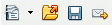
- Opcions del menú Fitxer a la barra d'eines
- Crear un document nou
- Obrir un document ja existent
- Desar
- Enviar per correu electrònic
- Exportar directament com a PDF
- Imprimir fitxer
- Previsualització
- 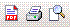
- Més opcions del menú Fitxer a la barra d'eines
Fent clic sobre el triangle petit situat a la dreta de la icona per crear un document nou, es desplega un menú d’opcions per escollir el tipus de document.
Les funcionalitats que trobeu al menú Fitxer són:
1. Nou crea un document nou, que pot ser com es mostra a la figura.
En funció de l’opció que escolliu, es configurarà l’entorn del LibreOffice.
2. Obre… proporciona el quadre de diàleg Abrir (figura), amb el qual podeu cercar un document al vostre ordinador. Podeu obrir arxius ODT, OTT, SXW, STW, DOC, DOT, TXT, HTML, XML…
Des del diàleg Obre, podeu:
- Desplaçar-vos pels diferents nivells de carpetes, veure’n el contingut i crear carpetes noves.
- Des de Tipo, podeu seleccionar que es vegin tots els arxius, o bé només un format en concret.
- Si teniu un mateix document desat en diferents versions, a Versió podeu escollir la versió que voleu obrir.
- L’opció Només lectura, si està activada, no us permet editar el document que obrireu.
- Per obrir més d’un fitxer alhora, cal prémer Control, seleccionar-los i obrir.
- Per esborrar un arxiu, primer el seleccioneu, feu un clic amb el botó dret del ratolí i, en el menú contextual, escolliu l’opció Suprimeix.
- Al menú contextual que s’obre fent un clic amb el botó dret sobre un fitxer, trobeu altres opcions, com canviar el nom, imprimir, crear un accés directe…
- Des de Documents recents, podeu accedir als deu darrers documents oberts amb el LibreOffice.
Amb l’opció Tanca, tanqueu totes les finestres obertes sense tancar el programa. Si un document té modificacions pendents de desar, el LibreOffice us avisa.
La primera vegada que deseu un document és amb l’opció Anomena i desa…
Des del diàleg Anomena i desa…, podeu:
- Desplaçar-vos pels diferents nivells de carpetes, veure’n el contingut i crear carpetes noves.
- Des de Tipo, podeu seleccionar amb quin format voleu desar el document. Si escolliu un format, només veureu els arxius amb l’extensió indicada.
- Extensió automàtica del nom del fitxer desa l’arxiu amb l’extensió que, per defecte, es correspon amb el tipus d’arxiu. En el cas d’un document de text, l’extensió pròpia del LibreOffice és ODT.
- Desa amb contrasenya permet introduir una contrasenya per protegir l’arxiu la propera vegada que es vulgui obrir.
L’opció Desa permet desar les modificacions fetes a un document que ja ha estat desat anteriorment.
L’opció Desa-ho tot permet, quan teniu més d’una finestra oberta amb els documents corresponents, desar alhora les modificacions fetes a tots els documents.
L’opció Torna a carregar presenta el document actiu tal com es troba desat, eliminant les modificacions fetes des de l’última vegada que s’ha desat.
Versions… fa possible obrir i desar, amb un sol fitxer, un document que té diferents versions. Aquesta opció del menú es mostra activa després d’haver desat un document. Permet que diferents persones treballin amb un mateix document i que, posteriorment, es puguin comparar les modificacions fetes per cadascú. Els canvis incorporats a una versió del document es poden acceptar per integrar-los al document final, o bé es poden rebutjar. Al camp Desa una versió nova de la finestra Versions podeu escriure un comentari sobre cada versió, que no es veurà al document, que indiqui l’autoria dels canvis que es faran a cada versió.
Exporta i Exporta com a PDF… obre la finestra Exporta, que permet desar un arxiu amb les extensions PDF o XHTML.
Amb l’opció Envia podreu fer el que es mostra a la figura.

- L’opció Envia \ Document com a correu electrònic obre el programa que teniu predeterminat com a client de missatgeria amb un missatge en blanc i el document actiu adjunt.
- L’opció Envia com a text d’OpenDocument obre una finestra nova del programa de correu electrònic per defecte amb el document actual com a adjunt. S’utilitza el format de fitxer OpenDocument.
- L’opció Envia com a Microsoft Word… obre una finestra nova del programa de correu electrònic per defecte amb el document actual com a adjunt. S’utilitza el format de fitxer Microsoft Word.
- Escollint l’opció Document com a PDF adjunt…, converteix el document actiu en aquest format i l’adjunta a un missatge.
- Quan treballeu amb documents molt extensos, l’opció Crea un document mestre us permet treballar amb documents més reduïts que després incorporareu al document principal.
- Crea un document HTML permet desar un document en format HTML per visualitzar-lo amb un navegador.
A Propietats podeu accedir a informació sobre el document actual.
- General: nom del fitxer, format, ubicació, pes, data i hora de creació (de la primera vegada que s’ha desat), darrera vegada que ha estat modificat, signatura digital (si la té), darrera vegada que s’ha imprès, temps d’edició…
- Estadística: nombre de pàgines, paràgrafs, paraules, caràcters…
També a Propietats podeu introduir informació sobre el document. Al camp Descripció podeu escriure el títol, el tema, les paraules clau i els comentaris que es desaran amb el document.
L’opció Signatures digitals… avala l’autoria del document i permet incorporar-hi un certificat digital.
Des de Plantilles podeu administrar les plantilles. Podeu desar un document nou com a plantilla, editar una plantilla, crear carpetes noves de plantilles… Per als documents de distribució múltiple, permet inserir automàticament dades des de la llibreta d’adreces.
Amb l’opció Previsualització de la pàgina, visualitzeu totes les pàgines del document. No permet editar l’arxiu. Per sortir, premeu l’opció Tanca la previsualització.
Des d’Imprimeix, accediu a les opcions d’impressió.
Configuració de la impressora permet escollir la impressora i configurar opcions d’impressió accessibles també des d’Imprimeix.
El botó Surt tanca totes les finestres i el programa. LibreOffice us pregunta si voleu desar els canvis abans de tancar.
El menú Edita
El menú Edita incorpora opcions que permeten modificar el contingut d’un document.
Des de la barra d’eines, podeu accedir a algunes opcions del menú Edita: tallar, copiar, enganxar, desfer i tornar a fer, buscar i substituir i el navegador (figura). Alguns botons tenen opcions múltiples (taula)
| Botó | Opcions |
|---|---|
| 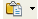 | Fent un clic sobre el triangle situat a la dreta de la icona d’Enganxar, us informa del tipus de fitxer del porta-retalls |
| 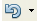 | Fent un clic sobre el triangle situat a la dreta de la icona Desfés es desplega una relació de les darreres accions que heu fet. Podeu seleccionar quantes voleu desfer |
| 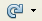 | Fent un clic sobre el triangle situat a la dreta de la icona Restaura, trobeu una relació de les accions per restaurar. Podeu escollir quantes voleu restaurar |
| 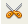 | Fent un clic sobre aquest botó Retalla la selecció i la ubica al porta-retalls |
| 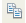 | Copia ubica una còpia de la selecció al porta-retalls |
| Enganxa situa el contingut del porta-retalls al lloc on es troba el cursor. Si heu fet una selecció, serà substituïda pel contingut que enganxeu |
Aquestes accions també les podeu fer amb les dreceres de teclat (figura).
Enganxament especial… us permet escollir un format per al contingut del porta-retalls que voleu enganxar. Resulta molt útil quan voleu enganxar text sense format.
L’opció Seleccioneu el text es mostra activa en documents de lectura. Permet fer una selecció sense que el cursor faci pampallugues.
Selecciona-ho tot selecciona tot el contingut del document.
Canvis fa referència a l’edició de les diferents versions d’un mateix document. Una versió d’un document no es pot editar, és de lectura. Les modificacions a una versió d’un document només es poden introduir amb l’opció Registre.
Si treballeu amb versions, des de Canvis podeu activar o desactivar les opcions següents:
- Activar l’opció Registre permet introduir modificacions a una versió. Els canvis fets es mostraran subratllats i amb un color diferent.
- Protegeix els registres permet introduir una contrasenya per evitar una modificació del document amb l’opció Registre.
- Mostra permet veure, al document original, les modificacions fetes a les diferents versions. Les diferències es mostraran amb colors diferents.
- Accepta o rebutja permet decidir, per a cada canvi, si s’incorpora o no al document original.
- Comentari permet afegir un comentari a una modificació.
- Fusiona el document unifica les versions en un mateix document. Es mostra el document original i els canvis introduïts a les diferents versions.
Compara el document permet comparar un document original amb una còpia que ha estat modificada indicant on es troben els canvis.
Cerca i reemplaça permet cercar un text al document i substituir-lo, si es vol, per un altre text.
Text automàtic mostra suggeriments per completar una paraula. Després d’escriure les tres primeres lletres, si coincideixen amb una entrada registrada a Text automàtic, es mostra una ajuda de color blau amb la resta de lletres per completar la paraula. Si premeu Retorn, accepteu la suggerència.
A el LibreOffice les opcions del menú inactives es mostren grises i dins un marc blau quan passeu el punter per sobre (figura). Les icones de la barra d’eines inactives es mostren de color gris.
Intercanvia la base de dades obre una finestra que permet obrir un document que intercanviarà unes dades amb el document actual. Cal seleccionar als dos documents els camps que intercanviaran.
L’opció Camps permet editar un camp que s’ha introduït a Insereix\Camps.
Una nota al peu és una informació addicional que s’ubica al final d’una pàgina o d’un document. S’insereix des del menú Insereix\Nota al peu. Poden estar numerades, o bé indicades amb un símbol. Des d’Edita\Nota al peu, podeu editar la nota.
Entrada de l’índex permet editar l’índex de contingut del document. Per crear un índex de contingut, cal anar al menú Insereix\Índexs i taules\Entrada.
Per inserir una base de dades bibliogràfica, cal anar a Eines\Base de dades bibliogràfica. L’opció Edita\Entrada bibliogràfica permet modificar-la.
Per inserir un enllaç a una pàgina d’Internet, cal anar a Insereix\Enllaç. L’opció Edita\Enllaç obre el diàleg Enllaç per fer-hi modificacions.
L’opció Enllaços permet editar els enllaços del document actual cap a altres documents.
L’opció Connector permet editar complements que amplien les funcionalitats del programa.
Mapa d’imatge permet editar les opcions d’un mapa sensible amb diferents àrees d’enllaços cap a altres documents o a una URL d’Internet. Cal seleccionar una imatge perquè es mostri activa al menú.
Objecte permet editar un objecte que s’ha inserit amb el menú Insereix\Objecte.
El menú Visualitza
Amb el menú Visualitza, podeu activar o desactivar opcions de visualització. Les opcions actives incorporen un senyal (checkbox) al davant.
A la barra d’eines, podeu accedir a algunes de les opcions del menú Visualitza: visualitzar fonts de dades, caràcters que no s’imprimeixen i escala.
- 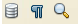
- Opcions del menú Visualitza a la barra d'eines
Format d’impressió mostra l’aspecte que tindrà el document quan s’imprimeixi.
Format web mostra com es visualitzarà el document amb un navegador.
Barra d’eines configura quines barres d’eines voleu que es mostrin i quines no. Permet accedir a diferents barres d’eines útils i interessants.
Activant les diferents opcions, es mostren barres d’eines flotants o incrustades (figura).
Podeu arrossegar una barra d’eines flotant per acoblar-la i fer-la fixa. El rectangle gris us mostra on se situarà. Quan deixeu de prémer el punter del ratolí, s’ubicarà.
També podeu desacoblar-la per fer-la flotant.
Per tancar una barra d’eines flotant, és suficient fer un doble clic sobre la barra superior corresponent.
Fent un clic a la icona de la barra d’eines, fareu que es mostri la barra de dibuix a sobre de la barra d’estat. Fent un clic a la mateixa icona, feu que es deixi de mostrar.
- 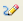
- Accés a barra de dibuix
Barra d’estat mostra o amaga la barra d’estat. La barra d’estat us ofereix informació i opcions com són, entre d’altres:
- El nombre de pàgines i el número de la pàgina actual.
- Determinar l’escala de visualització del document.
- Fer que el text nou que introduïu s’insereixi, INSERT, o es sobreescrigui, SOBRE.
Estat del mètode d’entrada es refereix a la visualització d’una finestra anomenada Input Method Engine.
Regle mostra o amaga els regles horitzontals i verticals.
Límits del text mostra o amaga el marc gris de la pàgina, que indica els marges de l’àrea que s’imprimirà.
Ombreigs de camp permet veure l’ombra de color gris que es mostra a sota d’un camp i d’altres indicadors.
Nom dels camps permet veure el nom dels camps introduïts al document.
Caràcters no imprimibles permet veure els salts de paràgraf, de línia…
Paràgrafs amagats es refereix a la visualització de text no visible, si n’hi ha al document.
Font de dades permet veure a una àrea de la pantalla una font de dades.
Navegador obre la finestra que porta aquest nom (figura). En documents extensos, resulta molt útil i facilita la navegació pel document. El navegador permet, per a cada categoria (imatges, capçaleres, taules, enllaços…), veure si hi ha elements al document. Fent un clic sobre els símbols + i -, feu que s’amaguin o es mostrin els elements. Al navegador, feu doble clic sobre l’element que busqueu, i el cursor immediatament el selecciona i us porta al lloc on està situat.
Per entendre el funcionament del navegador, obriu un document que contingui imatges, enllaços, taules… A sota de cada categoria, trobareu el nom dels elements que el document conté: gràfic 1, gràfic 2…, o bé objecte 1, objecte 2… Fent doble clic sobre un element d’una categoria, automàticament el cursor es desplaçarà i el veureu seleccionat.
L’opció Pantalla completa amaga les barres amb els menús i les eines. Des de Pantalla completa, clicant al botó Pantalla completa, torneu a veure de nou els menús i les eines.
Escala augmenta o redueix el zoom de visualització de la pantalla. Aquesta opció també és configurable des de la barra d’estat.
Fent clic al triangle petit situat al extrem dret de la barra d’eines, podeu accedir als diàlegs per configurar quines icones de comandaments es mostraran a la barra d’eines (figura).
El menú Insereix
Des d’Insereix, podeu inserir elements al document: salts de pàgina, imatges, enllaços, objectes, àrees, marcs, símbols, etiquetes, marcadors, camps…
Salt manual… permet les opcions següents (figura).
- Salt de línia situa el cursor a la línia següent, sense crear un paràgraf nou. Si hi ha text a la dreta del cursor, el mou a la línia següent. Prement les tecles de majúscules i de retorn també es fa un salt de línia.
- Salt de columna situa el cursor a l’inici de la columna següent. Si hi ha text a la dreta del cursor, el mou a la columna següent.
- Salt de pàgina mou el cursor al començament de la pàgina següent. Si hi ha text a la dreta del cursor, el situa a la pàgina següent. Prement les tecles Control i Retorn, feu un salt de pàgina.
L’opció Camps permet introduir automàticament al document la informació que indiqueu, com la data, l’hora, el número de pàgina, el tema, el títol, l’autor/a… (figura). Aquesta informació es mostra al document amb un fons gris i un text genèric, com data, hora, títol, autor/a… Per visualitzar les dades que el LibreOffice ha introduït automàticament, feu una previsualització o activeu Visualitza \ Nom dels camps. Dades com l’autor/a, el títol, el tema… són les que heu fet constar a Eines \ Opcions \ Dades d’usuari i a Fitxer \ Propietats.
Des d’Edita \ Camps o des del menú contextual que s’activa fent clic amb el botó dret del ratolí, s’obre el diàleg Camps on podeu configurar que el contingut d’un camp sigui fix o variable. Si deixeu camps variables, la propera vegada que deseu el document es modificaran: l’hora, la data, el número de pàgina… Des del diàleg Camps, també podeu configurar el format del camp.
Caràcter especial obre la finestra que porta el seu nom (figura). Seleccioneu un Tipus de lletra i un Subconjunt per cercar un símbol. Amb l’opció D’acord, el símbol escollit s’insereix al document en el lloc on es troba el cursor.
Secció permet inserir, al lloc on es troba el cursor, una secció nova al document.
A la finestra Insereix una secció, a Enllaç, podeu fer la crida a un altre document que s’inserirà dins la secció. Com que el document no està incrustat sinó vinculat, quan modifiqueu el document d’origen, també el veureu modificat dins la secció. Des de Columnes, podeu indicar quantes n’hi ha d’haver i el seu disseny. Podeu configurar també el sagnat, el color de fons… per a la secció nova (figura).
Enllaç obre la finestra que porta aquest nom.
Per crear un enllaç a una adreça d’Internet, seleccioneu Internet. Empleneu el camp Destinació amb la URL i Text amb el nom que es veurà al document. A continuació, premeu els botons Aplica i Tanca: ja tindreu el text amb l’enllaç al document.
Per inserir un enllaç a un document que teniu en local, escolliu l’opció Document de la columna de l’esquerra. Al camp Camí, prement sobre la carpeta, indiqueu el camí del fitxer i, al camp Text, escriviu el text que es mostrarà al document. Finalment, premeu les opcions Aplica i Tanca (figura).
Atenció! Heu de tenir en compte la ruta que indiqueu per cercar el document. En el cas de l’exemple superior, l’enllaç funciona, però deixarà de funcionar si moveu el fitxer o la carpeta de lloc.
Per garantir que l’enllaç funcioni encara que la carpeta s’ubiqui en un altre lloc, a un servidor web, per exemple, cal que el document d’origen de l’enllaç i el document de destí es trobin a la mateixa carpeta o al mateix directori de carpetes. Aleshores, al camp Camí, modifiqueu manualment el camí. Continuant amb l’exemple, si el document d’origen i de destí es troben a la mateixa carpeta, a Camí escriureu només Informe.odt. Si el document d’origen de l’enllaç es troba a un nivell superior, a Camí escriureu: elnomdelacarpeta\Informe.odt.
Activant Capçalera per defecte, situeu, a la part superior de la pàgina, una àrea on podeu inserir text, una imatge… La capçalera se situa a totes les pàgines del document. Desactivant Capçalera, suprimiu la capçalera amb el seu contingut. Un missatge d’avís us demana que confirmeu que voleu suprimir la capçalera.
El marc gris no es mostrarà quan s’imprimeixi el document (figura).
A la finestra anomenada l’estilista, que s’activa al menú Format \ Estil i formatació, situeu-vos a l’opció Encapçalament de la categoria Estils de paràgraf. Feu clic amb el botó dret i, al menú contextual, seleccioneu l’opció Modifica…. S’obrirà la finestra Estil de paràgraf: capçalera on podeu configurar opcions, com el color de fons de la capçalera, l’alineació, afegir-hi un marc, la font, la mida de la lletra… Feu un clic al botó D’acord i s’aplicarà automàticament a la capçalera el format escollit. També podeu accedir a aquesta opció situant-vos a la capçalera, fent clic amb el botó dret del ratolí i escollint l’opció del menú contextual Edita l’estil del paràgraf.
Peu i Nota al peu… situen una àrea a la part inferior de la pàgina. Peu s’insereix a totes les pàgines del document. Nota al peu s’insereix cada vegada només a una pàgina. Funcionen com Capçalera. Per modificar el format, aneu a l’estilista, que s’activa a i feu un clic a Format \ Estil i formatació, segons sigui el cas, a l’opció Peu o Nota al peu de la categoria Estils de paràgraf. Al menú contextual, escolliu l’opció Modifica i configureu un format nou. A Eines \ Notes al peu podeu indicar les opcions de configuració.
Per numerar les pàgines d’un document, inseriu, primer, un Peu. A continuació, amb el cursor dins el peu, aneu a Insereix \ Camps \ Número de pàgina.
L’opció Llegenda només es mostra activa quan seleccioneu una imatge, quan situeu el cursor a una taula… i permet escriure un peu per a una imatge, per a una taula… Incorpora moltes opcions de configuració, com la inserció automàtica.
Marca de text permet situar, al lloc on teniu el cursor, un marcador invisible per a un punt on voleu tornar-hi més endavant. Fent un clic a l’opció del menú Insereix \ Marca de text, s’obre la finestra Insereix una marca. Escriviu un nom per al marcador i premeu D’acord. Al vostre exemple, heu creat al document tres marcadors que porten per nom completar, conclusions i revisar. Al navegador (Edita \ Navegador), feu un clic sobre aquestes opcions i el cursor es desplaçarà automàticament al lloc on heu inserit la marca.
Referència creuada té un funcionament similar a Camps, però amb més opcions de configuració.
Nota permet inserir una nota al document amb un comentari. Incorpora la data i l’hora i, si es vol, prement sobre el botó Autor, també el nom de qui ha escrit la nota. Una nota mostra la forma d’un petit rectangle groc i se situa al lloc on teniu el cursor. No es mostra fent una previsualització o quan s’imprimeix el document.
Seqüència insereix una seqüència de comandaments script al document. Es mostra en forma de petit rectangle verd. Aquesta opció s’utilitza, principalment, quan es crea un document destinat a ser visualitzat amb un navegador.
Índexs i taules permet crear un índex de contingut (figura). A Insereix \ Índexs i taules teniu les opcions Entrada, Índexs i taules i Entrada bibliogràfica. Per crear un índex nou, aneu a l’opció Índexs i taules. Podeu escollir el tipus d’índex que voleu crear: de contingut, alfabètic, d’il·lustracions, de taula… i podeu configurar un disseny. Un cop creat l’índex, per afegir una entrada nova, aneu a l’opció Insereix \ Índexs i taules \ Entrada.
Amb l’opció Sobre, podeu escriure el nom del destinatari/ària i del remitent, donar format i configurar la impressora per imprimir una carta.
Marc obre la finestra que porta el seu nom. Escolliu, per al marc que voleu crear, les mides (que després podeu modificar manualment), indiqueu si ha de tenir columnes, el color de fons… Dins el marc, podeu inserir text, imatges, objectes… Hi podeu afegir un enllaç, que s’activarà fent clic sobre el marc.
Podeu canviar el format d’un marc seleccionant-lo i anant a Format \ Marc. Seleccioneu un marc i feu un doble clic a sobre, també obrireu la finestra Marc.
Taula permet inserir una taula al document. També trobeu la mateixa funció a Taula \ Insereix.
Línia horitzontal permet escollir un dels dissenys per inserir un separador decoratiu al document.
Imatge permet inserir al document una imatge. Teniu dues opcions:
- Des d’un fitxer: obre la finestra Insereix una imatge. Desplaçant-vos pels diferents nivells de carpetes, podeu cercar la imatge. L’opció Previsualitza permet mostrar una previsualització de la imatge a la mateixa finestra.
Per defecte, la imatge queda incrustada i es desa amb el mateix document. Si activeu Enllaç, s’insereix la imatge vinculant-la amb el fitxer d’origen. Marcant aquesta opció, si canvieu de lloc el fitxer d’origen o envieu el document sense l’arxiu d’origen, la imatge ja no es mostrarà al document. - Inserir una imatge de l’escàner. Primer, cal seleccionar un escàner, a continuació, s’obre el controlador que porta incorporat el mateix escàner i, finalment, la imatge obtinguda s’insereix al document.
Pel·lícules i so obre la finestra Insereix una pel·lícula o so. Permet afegir un fitxer de vídeo o de so al document. A Tipo podeu escollir quin format d’arxiu voleu que es mostri. Per reproduir un arxiu de vídeo o de so, cal anar a Eines \ Reproductor multimèdia.
Amb l’opció Obcjete, podeu inserir un objecte al document (figura). Escolliu si voleu inserir un objecte OLE, so, vídeo, una miniaplicació (applet de Java), una fórmula, un diagrama…
Per inserir un objecte OLE (full de càlcul, gràfic, dibuix, presentació, fórmula…) podeu crear-lo de nou, o bé cercar-ne un que tingueu a l’arxiu (figura). Per defecte, l’objecte s’insereix incrustat i es desa amb el document.
Quan inseriu un fitxer ja existent, si marqueu l’opció Crea’n un a partir d’un fitxer, vincula el document amb el fitxer. Aleshores, quan torneu a obrir el document, si no hi ha el fitxer, l’objecte OLE no es veurà.
Marc flotant permet crear una finestra on es visualitzi un altre document. Cal indicar l’amplada, l’altura i crear el vincle amb el document que s’ha de mostrar.
Fitxer incrusta un document de text o HTML al lloc on es troba el cursor. Per inserir un document vinculat a un altre, cal fer-ho des de l’opció Insereix \ Secció.
El menú Format
Podeu donar format al document de manera:
- Directa: seleccionant manualment un text o altres elements per aplicar-los un atribut.
- A través dels estils, que es defineixen a la finestra Estil i formatació i, a continuació, s’apliquen. Modificant un estil, canvia el format de totes les parts del document on heu aplicat aquell estil.
Moltes opcions del menú Format són accessibles des de la barra de format. Si no es mostra la barra de format, aneu al menú Visualitza \ Barres d’eines \ Formatació. Activant les diferents icones, podreu aplicar format directe.
Fent una selecció i anant a l’opció Formatació per defecte, treureu el format (font, mida de la lletra, negreta…) que heu aplicat de manera directa. Aquesta opció no treu el format aplicat amb l’estilista.
Caràcter obre la finestra Caràcter, on podeu escollir una font, un estil (negreta, cursiva…), una mida per a la lletra, efectes de la font (color, subratllat…), un color de fons… per aplicar a una selecció o a la paraula on es troba el cursor.
Fent un clic a l’eina Pinzell de format de la barra d’eines, copieu el format de la paraula on es troba el cursor, d’una selecció de text o d’un element seleccionat: taula, imatge… Un cop copiat el format, el punter mostra la icona del cubell i permet aplicar el mateix format fent un clic sobre altres paraules, seleccions o elements.
- 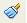
- Pinzell de format
- Punter en forma de cubell
Fent un sol clic sobre el Pinzell de format, podreu fer una vegada l’acció de copiar i aplicar format.
Fent doble clic, podreu aplicar totes les vegades que vulgueu el format copiat. En aquest segon cas, per desactivar el Pinzell de format, cal fer-li un clic a sobre.
Des de Paràgraf, podeu indicar per al paràgraf seleccionat opcions com:
- El sagnat abans i després del text.
- L’alienació a l’esquerra, al centre, a la dreta o justificat.
- El color de fons, el tipus de marc…
Pics i numeració permet escollir diferents opcions (figura), distribuïdes en pestanyes, per aplicar a un text seleccionat.
Pàgina…, aquesta opció està relacionada amb l’estilista. És el mateix tipus de diàleg que s’activa situant-vos sobre un estil de l’estilista i fent clic amb el botó dret escollint l’opció Modifica. Des de Pàgina, podeu modificar un estil per a una pàgina. Podeu definir opcions com:
- Format i marges de paper
- Color de fons
- Encapçalament i peu de pàgina
- Marcs
- Columnes
Canvia majúscules/minúscules permet, seleccionant un text que contingui caràcters en majúscules, convertir-los a minúscules i a l’inrevés. Resulta molt pràctic quan hi ha molts caràcters per canviar.
Columnes permet escollir un disseny de columnes per aplicar a una pàgina o secció (figura). També podeu configurar dissenys personalitzats de columnes.
Seccions es mostra actiu si heu inserit una secció al document des d’Insereix \ Secció. Obre la finestra Edita les seccions. Fent un clic al botó Opcions, podeu modificar les columnes, el sagnat, el color de fons…
Estils i formatació obre la finestra que porta el seu nom (figura), anomenada també l’estilista o format dinàmic. Fent un clic a la icona Estils i formatació de la barra de format o fent un clic a F11, podeu fer que es mostri o es deixi de mostrar. L’estilista permet, amb pocs clics, canviar el format del document.
- 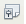
- Estils i formatació
- A les icones que es mostren a la part superior de la finestra, escolliu si voleu aplicar un estil de paràgraf, caràcter, marc, pàgina o de llistes. A la llista central, escolliu un estil.
- Activeu el cubell.
- Moveu el punter, que ara té forma de cubell, pel document fins a arribar al lloc on voleu aplicar l’estil. No cal prémer cap botó del ratolí.
- Amb el mateix cubell, feu la selecció i s’aplicarà l’estil.
- Deixeu anar el cubell, és a dir, el botó esquerre del ratolí.
- Punter en forma de cubell
Amb el cubell activat, podeu continuar aplicant l’estil a altres elements del document. Quan hàgiu acabat, feu un clic sobre el cubell per desactivar-lo.
Podeu crear un nou estil personalitzat de diferents maneres:
- Situeu-vos a sobre d’un estil de l’estilista i feu un clic amb el botó dret del ratolí. Al menú contextual, escolliu l’opció Nou. Al diàleg que s’obre, escriviu un nom per a l’estil i definiu-ne les característiques de format. Feu un clic a D’acord i ja tindreu l’estil personalitzat a l’estilista.
- Primer, doneu format a un text o a un altre element de manera directa. A continuació, a l’estilista, feu un clic a la icona de la categoria (paràgraf, caràcter, marc, pàgina o de llistes) de l’estil nou que voleu crear. Feu un clic al lloc del document on abans heu donat format directe per copiar l’estil. Feu un clic a la icona situada més a la dreta i escolliu l’opció Nou estil a partir de la selecció.
-

- Creació d'un nou estil
A la finestra Crea un estil, escriviu un nom per a l’estil i feu clic a D’acord. El vostre estil es mostrarà a l’estilista.
Podeu eliminar un estil personalitzat situant-vos-hi a sobre, obrint el menú contextual i escollint l’opció Suprimeix. Si elimineu un estil, desapareix del document el format aplicat amb aquell estil.
Per modificar un estil, situeu-vos a sobre i premeu amb el botó dret. En el menú contextual, escolliu l’opció Modifica.
Formatació automàtica aplica al document les opcions de format, correcció i completar paraules que heu configurat a Eines \ Correcció automàtica. Podeu aplicar-les mentre esteu escrivint, automàticament a tot el document, o bé que es mostri un diàleg amb una relació dels canvis proposats i que pugueu escollir quins accepteu i quins rebutgeu.
Ancora permet ancorar una imatge a una pàgina. Amb aquesta opció, encara que elimineu elements, la imatge no es pot esborrar.
Ajusta permet, després de seleccionar una imatge, escollir com ubicareu el text en relació a la imatge.
Alineament permet situar un o més elements seleccionats a la ubicació escollida: esquerra, centre, dreta, justificat, amunt, centrat verticalment o avall.
Donats diferents elements que se superposen, per exemple, diverses imatges, Ordena permet decidir per a cada element seleccionat on voleu situar-lo: més endavant, més endarrere, al fons…
Inverteix permet invertir una imatge seleccionada, vertical o horitzontalment.
Agrupa permet fer un grup amb diversos elements per moure’ls o aplicar format simultàniament. També podeu desagrupar-los.
Objecte permet donar format (mida, fons, línia…) a un objecte seleccionat.
Marc només es mostra actiu amb un marc seleccionat. Obre la finestra Marc, que permet configurar opcions de format.
Imatge només es mostra actiu amb una imatge seleccionada. Obre la finestra Imatge, que permet configurar opcions de format per a la imatge.
Situant-vos a sobre d’un document i fent clic amb el botó dret del ratolí, podeu accedir a diverses opcions de format que també es troben al menú Format (figura).
El menú Taula
Al menú Taula, podeu inserir una taula a un document i editar-la.
Taula \ Insereix \ Taula obre la finestra Insereix una taula. Definiu el nombre de files i columnes per a la taula que voleu crear. Formatat automàtic permet escollir un disseny per a la taula. Finalment, feu clic a D’acord.
A la barra d’eines, amb el punter sobre la fletxa que hi ha a la dreta de la icona Taula podeu crear ràpidament una taula (figura).
- 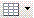
- Botó de taula
Situant el cursor dins una taula ja creada, podeu inserir files noves o columnes noves amb l’opció Taula \ Insereix \ Files o bé Taula \ Insereix \ Columnes, que obren les finestres corresponents (figura).
Amb l’opció Suprimeix, podeu, després de situar el cursor al lloc adient, eliminar la taula sencera, una fila o una columna.
Selecciona, com el seu nom indica, permet fer la selecció de la taula, fila, columna o cel·la on es troba el cursor. Una altra opció per seleccionar una taula, fila, columna o cel·la és situar el cursor dins la taula i, amb el ratolí, arrossegar per fer la selecció.
Situant-vos dins una taula i fent clic amb el botó dret del ratolí, es mostra el menú contextual amb moltes opcions de configuració de la taula.
Quan treballeu amb taules, la barra d’eines flotant Taula us permet crear i editar ràpidament les taules (figura). Recordeu que les barres flotants s’activen a Visualitza \ Barres d’eines i es poden acoblar.
Fusiona les cel·les ajunta les cel·les seleccionades en una sola cel·la.
Divideix les cel·les divideix una o més cel·les en el nombre de cel·les que indiqueu.
Fusiona la taula ajunta dues taules consecutives, no separades per cap paràgraf. Quan hi ha diferents taules consecutives, un missatge us pregunta quines taules voleu ajuntar (figura).
Divideix la taula divideix, en el punt on es troba el cursor, una taula en dues.
Converteix permet convertir automàticament un text situant-lo dins una taula, o bé el contingut d’una taula convertir-lo a text.
Ordena permet organitzar automàticament el contingut d’una taula a partir dels criteris que indiqueu: alfanumèric, ascendent, descendent…
Fórmula mostra la barra de fórmules del full de càlcul. Cada cel·la de la taula equival a una cel·la del full de càlcul.
A Format mumèric podeu configurar el format de les hores, les dates, les monedes, els números…
Formatació automàtica dóna format a la taula a partir del disseny que escolliu (figura).
Adaptació automàtica permet, per a la columna o fila de la taula on estigui situat el cursor, indicar en centímetres l’amplada o altura que ha de tenir.
A Amplada de la columna, indiqueu si voleu modificar l’amplada de la columna 1, 2, 3… en funció del lloc on estigui ubicada, d’esquerra a dreta. A Amplada, indiqueu una amplada en centímetres i feu un clic a D’acord (figura).
Una altra opció, Amplada òptima de la columna i Alçada òptima de fila: les columnes i les files s’ajusten automàticament a una amplada o altura òptimes, la de la cel·la més ampla o més alta. També podeu indicar, a Distribueix les columnes equitativament i Distribueix les files equitativament, que les amplades i alçades siguin equitatives, és a dir, totes igual.
Fixar l’amplada de columnes i de files també es pot fer manualment estirant del marc de la taula (figura).
Propietats de la taula obre la finestra Format de la taula. Informa de les propietats de la taula (aliniació, columnes, fons, marc…) i permet modificar-les (figura).
El menú Eines
La revisió ortogràfica pot ser manual o automàtica.
- 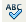
- Revisió ortogràfica manual
- 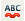
- Revisió manual automàtica
A la barra d’eines, trobareu les icones corresponents per activar o desactivar la revisió manual o automàtica.
Revisió ortogràfica manual
L’opció del menú Eines \ Ortografia i gramàtica i la icona de la barra d’eines corresponent obren la finestra que porta el mateix nom. Podeu revisar tot el document, o bé una part seleccionada. Per a cada error ortogràfic, podeu acceptar la suggerència del diccionari i canviar la paraula, o bé ignorar-la (figura).
Revisió ortogràfica automàtica
Si està activa la revisió automàtica al document el LibreOffice us indica amb una línia vermella ondulada els errors ortogràfics.
Situant el punter sobre la paraula amb un error, amb el botó dret del ratolí activareu un menú contextual amb opcions de correcció (figura).
Llengua permet accedir a la finestra de Partició de mots i a la revisió de la separació sil·làbica.
Recompte de paraules us informa del nombre de paraules i caràcters del document actual.
A Correcció automàtica podeu configurar i personalitzar opcions de correcció del text, indicar excepcions… També podeu activar, desactivar i configurar la funció de completar paraules.
Númeració d’esquemes, Numeració de línies i Notes al peu obren les finestres que porten el nom corresponent. Permeten configurar opcions com:
- L’estil de numeració basant-se en lletres (A, B, C…) majúscules o minúscules, xifres àrabs, xifres romanes…
- Numerar automàticament els capítols, les línies…
- Indicar el sagnat o la posició de cada línia en relació a les altres.
El format configurat s’aplica a través de la finestra Estils i formatació.
A Galeria, trobareu imatges i sons per inserir al document. Estan classificats per temes, i hi podeu afegir temes nous i elements. Arrossegant un element des de Galeria, el situeu al document (figura).
La finestra de Galeria podeu obrir-la i tancar-la com una persiana, amb més o menys alçada. Es pot deixar activa, però tancada, de manera que es pugui obrir quan es necessiti (figura).
Reproductor multimèdia obre la finestra que porta el seu nom. Permet cercar un fitxer de so o de vídeo que tingueu arxivat i reproduir-lo (figura).

Per reproduir un fitxer que estigui incrustat a la pàgina, aneu a Visualitza \ Barra d’eines \ Reproductor multimèdia. A sobre de la barra d’estat, es mostra un reproductor (figura). Seleccionant l’arxiu de so o de vídeo incrustat al document, podeu reproduir-lo utilitzant les diferents icones de control.
La icona d’enllaç multimèdia permet cercar un arxiu nou de so o vídeo al vostre ordinador.
-

- Enllaç a arxiu multimèdia
Auxiliar de combinació de correu, com el seu nom indica, ajuda a crear una carta o un correu electrònic que s’ha d’enviar a moltes persones. Cal indicar el document de base amb el contingut, seleccionar una llista d’adreces, tenir en compte el sexe del destinatari/ària en la salutació, configurar el disseny, personalitzar la correspondència amb el nom i l’adreça.
Ordena, com el seu nom indica, ordena les files, paràgrafs seleccionats… seguint el criteri que indiqueu: per ordre alfabètic, numèric…
Calcula, a partir d’una fórmula, fa un càlcul i copia el resultat al porta-retalls.
Actualiza, com el seu nom indica, actualitza el contingut dinàmic que hi hagi a la pàgina: camps, vincles a altres documents…
Una Macro es basa en un esdeveniment que origina una seqüència de comandaments (moure el ratolí sobre un objecte, fer un clic sobre una imatge, un enllaç…).
Gestor d’extensions… permet afegir i treure extensions del LibreOffice
Paràmetres del filtre XML... permet crear i editar filtres per importar i exportar arxius XML.
Personalitza… permet modificar els menús i crear-ne de nous, afegir i treure icones de la barra d’eines, personalitzar les dreceres de teclat….
Opcions… permet configurar les vostres preferències: dades personals, idioma, indicacions sobre els colors de la interfície, imprimir… Les dades configurades es desen i es mostraran la propera vegada que obriu el LibreOffice.
El menú Finestra
Al menú Finestra trobareu les opcions:
- Nova finestra: obre una finestra amb el mateix contingut que la finestra actual. Les modificacions fetes en una finestra s’apliquen, també, a totes les altres finestres que contenen el mateix document.
- Tanca la finestra: tanca la finestra activa.
Al final del menú Finestra, trobeu una relació dels documents que teniu oberts amb el LibreOffice. El document actiu mostra un punt negre al davant. Des de Finestra, podeu canviar el document actiu seleccionant un altre document obert (figura).
El menú Ajuda
Al menú Ajuda trobareu (figura):
- L’Ajuda de LibreOffice permet accedir al tutorial que porta incorporat el programa. Podeu trobar ajuda a través del contingut, l’índex i la cerca.
- Què és això?: Prement aquesta opció, un interrogant es desplaça amb el punter i mostra una etiqueta amb ajuda contextual.
- Assistència us adreça a: www.LibreOffice
- Registre… us connecta a: www.LibreOffice per registrar-vos com a usuaris de LibreOffice. No és obligatori el registre.
- Quant al LibreOffice us informa de la versió i dels drets d’autor (copyright).